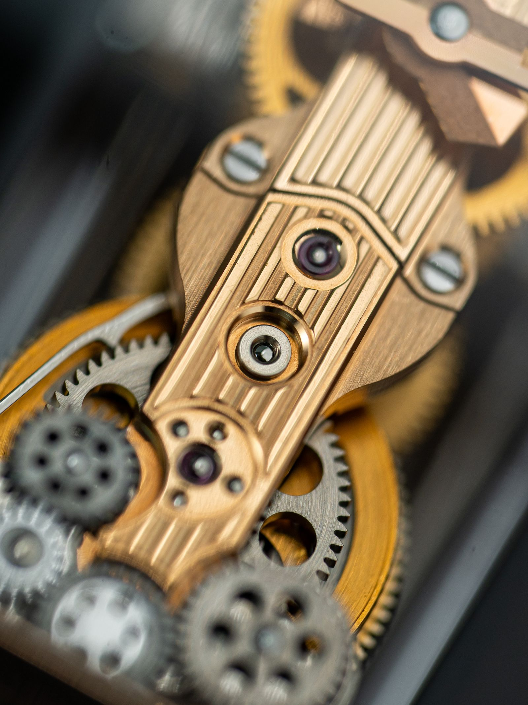

Quartz Krizi: İsviçre Saat Sanayisi Nasıl Çöktü, Nasıl Döndü?
25 Aralık 1969, Noel günü. Tokyo’da Seiko bir saati satışa çıkarıyor ve reklamın sloganı tek cümle: “Bir gün tüm saatler böyle yapılacak.” Fiyatı 450 bin yen, yani 1966’da çıkan bir Toyota Corolla’nın etiket fiyatına yakın. O gün dünyanın saat başkenti hâlâ İsviçre’ydi ve İsviçre’nin elinde aynı teknoloji vardı. Yine de on yıl sonra İsviçre’deki saat çalışanlarının neredeyse yarısı işini kaybetmiş olacaktı. Bu yazı o düşüşün ve sonrasındaki sıra dışı dönüşün hikâyesi. Hikâye bildiğimizden daha karışık: “kuvars geldi, İsviçre battı” anlatısı yarı doğru.

Noel günü, Tokyo
Ürünün resmî adı Seiko Quartz-Astron 35SQ. Bugünkü Seiko Epson’un atası Suwa Seikosha’da yaklaşık on yıl süren bir Ar-Ge’nin ürünü, hikâyesi de 1964 Tokyo Olimpiyatları’na dayanıyor: Seiko o oyunlarda maraton zamanlaması için kuvars bir zamanlayıcı geliştirmişti. Astron aynı fikrin bileğe sığan hâli.
Altın kasalı sürüm 450.000 yendi. Saat ayda en fazla ±5 saniye sapıyordu, yani iyi bir mekanik saatin bir günde yaptığı sapmaya yakın bir değerdi. Tanıtımın ardından bir hafta içinde 100 altın kasalı saat satıldığı aktarılıyor. Ürün sonradan elektrik mühendisliğinin dönüm noktaları listesine de girdi.
Burada bir ayrıntıyı atlamamak lazım: Astron bir lüks ürün olarak çıktı. İlk hâliyle ucuz bir şey değildi. Asıl şok, ürünün kendisinden çok, bundan sonra olacaklardı.
Kuvars saat nasıl çalışır?
Bu hikâyeyi anlamak için bir kuvars saatin içinde ne olduğunu bilmek yardımcı olur, ve fikir şaşırtıcı derecede zarif. Kuvars bir kristal, piezoelektrik bir malzeme: elektrik uygularsan titreşir, titreştiğinde de elektrik üretir. Saatte bu kristal küçük bir elektronik devrenin parçası olarak çok düzenli bir hızda titreşir. Bugünkü saatlerde bu hız saniyede 32.768 kez, Astron’da ise 8.192 kez. Bir mekanik saatin dengesi ise saniyede yaklaşık dört kez gidip geliyor.
Peki neden böyle tuhaf bir sayı? Çünkü 32.768, 2’nin 15. kuvveti. Bir mikroçip bu titreşimleri sayar ve frekansı art arda 15 kez ikiye bölerek saniyede tek bir darbe üretir. O darbe küçük bir adım motorunu bir adım döndürür, motor dişlileri çevirir, akrep ve yelkovan hareket eder. Dijital saatte darbe ekranı sürer. Astron’daki 8.192 ise 2’nin 13. kuvveti, aynı mantığın daha basit bir hâli.
Önemli olan şu: mekanik saatin hassasiyeti ustalığa ve dişli sayısına bağlıydı. Kuvars saatin hassasiyeti ise bir kristale ve bir çipe bağlıydı. İkisi de seri üretildikçe ucuzlayan şeylerdi.
İsviçre’nin elinde de vardı
İsviçre geride kalmış bir sanayi değildi. İlk kuvars saat 1927’de Bell Laboratuvarları’nda yapılmıştı. İsviçreli yaklaşık yirmi saat firması 1962’de Neuchâtel’de ortak bir araştırma merkezi, Centre Électronique Horloger’i (CEH) kurmuştu. 1967’de Neuchâtel Gözlemevi’nin doğruluk yarışmasına CEH’in Beta 1 prototipi de girdi, Seiko’nun kuvars prototipi de. Seiko’nun kendi müzesi, yarışı İsviçre’ye karşı “küçük bir farkla kazanılmış bir zafer” diye anlatıyor. İsviçre’nin ilk analog kuvars saati Beta 21 ise Nisan 1970’te Basel Fuarı’nda göründü.
Renkler yalnızca ayrım içindir.
Yani İsviçre teknolojiyi biliyordu. Bir kaynak durumu şöyle özetliyor: İsviçreliler, kuvarsa hâkim olmalarına rağmen kuvars saatlere inanmadı. Bu doğru olabilir. Ama hikâyenin tamamı değil, bunu birazdan göreceğiz.
Çöküş neden bu kadar hızlı oldu?
Cevabın bir kısmı yarı iletken ekonomisinde yatıyor. Kuvarsın kalbi bir elektronik devre ve elektronik, seri üretildikçe hızla ucuzluyor. ABD’de Texas Instruments, Fairchild ve National Semiconductor dijital kuvars saatlerin seri üretimine girip fiyatları aşağı çekti. Hamilton Pulsar 6 Mayıs 1970’te ilk elektronik dijital saat oldu.
Japonya 1970’te yaklaşık 24 milyon, 1970’lerin sonunda yaklaşık 90 milyon saat üretiyordu. 1980’de Japonya’nın toplam saat üretimi İsviçre’yi geçti. İsviçre ise bir zamanlar çok geniş bir pazara sahipti: 1945’te dünya saat pazarının yüzde 80’inden fazlası İsviçre saatleriydi.
Düşüşün rakamları sert. İsviçre’nin saat üretimi 1974’te 96 milyon adetken 1983’te 45 milyona indi. Omega ve Tissot’nun sahibi SSIH’nin satış hacmi 1974’te 12,4 milyon adetken 1982’de 1,9 milyona geriledi. İstihdam 1970’te yaklaşık 89 binken 1985’te 33 bine düştü. Şirket sayısı yaklaşık 1.600’den 600’e indi.
Fiyat neden bu kadar hızlı düştü?
Bunu benim okumam olarak ekleyeyim, çünkü rakamlar kadar mantık da önemli. Mekanik bir saatin maliyeti büyük ölçüde insan emeğinden gelir: parçaları işlemek, monte etmek, ayarlamak, tekrar ayarlamak. Her saat biraz ayrı bir iştir ve üretim iki katına çıkınca maliyet neredeyse yarıya inmez. Kuvars saatte ise ağırlık elektronikte. Bir çip tasarlamak pahalıdır ama ilk çip çıktıktan sonra milyonuncusu neredeyse aynı fiyata gelir. Yani üretim arttıkça birim maliyet düşer ve bu düşüş kendini besler: ucuzlayan ürün daha çok satar, çok satan ürün daha da ucuzlar.
Astron’un 450 bin yenlik fiyatı bu yüzden yanıltıcıydı. O fiyat, teknolojinin değil, teknolojinin başlangıç noktasının fiyatıydı. Aynı fikir birkaç yıl içinde 50 dolarlık bir dijital saate, sonra bir kırtasiye rafındaki plastik saate dönüştü. Mekanik saat üreticileri aynı eğrinin üzerinde değildi. Onların hassasiyeti ustalıkla geliyordu, ustalık ise ölçeklenmiyordu.
Ama sadece kuvars değildi
Burada hikâye ilginçleşiyor. Pierre-Yves Donzé’nin araştırmasına dayanan bir özet, “kuvars krizin tek nedeniydi” anlatısını açıkça reddediyor. Gerekçeleri şöyle:
Yapı sorunu. 1934 tarihli Statut horloger bir kartel düzeni yaratmıştı. ASUAG hareket ve parça üretimini tek çatıda topluyordu, 36 üst düzey üretici ise kendi kalibrelerini üretmek zorundaydı. Bu yapı rasyonelleşmeyi engelliyordu.
Ucuza kayış. Birçok üretici, kalitesiz “roskopf” saatlerle ucuz pazara yöneldi. Omega bunun en bilinen örneğiydi: 1965 ile 1974 arasında satış hacmi 3,4 milyondan 12,5 milyon adede çıktı ama marka değeri zedelendi.
Para. 1971’de Bretton Woods sisteminin çökmesi İsviçre frangını değerlendirdi, bu da ABD’deki İsviçre saatlerinin fiyatını yükseltti. 1970’lerdeki küresel durgunluk da ekledi.
Kuvarsın gecikmeli rolü. 1975’teki ihracat düşüşü doğrudan kuvarsa bağlanamaz, çünkü o yıl Japonya’nın kuvars üretimi toplamın yalnızca yüzde 8,5’iydi. Kuvars üretimi mekanik üretimi 1979’da geçti.
Federal hükûmet de 1970’lerin ortasındaki krizden sonra mikro teknoloji ve entegre devre projelerini finanse etmeye başladı. 1978’de kabul edilen “Bonny kararnamesi” bu destek mekanizmalarından biriydi.
Yani kuvars, zaten zayıflamış, parçalı ve ucuza kaymış bir sanayinin üzerine bir darbe gibi geldi. Bunu bilince “İsviçre inanmadı” cümlesi de başka bir ışıkta görünüyor: mesele yalnızca bir inanç eksikliği değil, kuvarsı ana ürün yapacak tek bir iradenin ve ortak bir üretim yapısının olmamasıydı.
Peki 1970’lerde bir İsviçreli yönetici ne yapabilirdi?
Geriye dönüp bakınca her şey apaçık görünür ama o dönemin içinden bakmak daha zor. Kuvars 1975’te hâlâ Japon üretiminin yüzde 8,5’iydi. Bir İsviçreli yönetici için o yıl ihracatın düşmesinin nedeni kur ve durgunluk olabilirdi, ve gerçekten de bir kısmı öyleydi. Teknoloji geçişleri böyle işler: sinyal gürültünün içinde kaybolur, kesinlik ancak geç gelir. “Neden önceden görmediler?” sorusunun cevabı genelde “gördüler ama o sırada başka şeyler de oluyordu”dur.
Üstelik İsviçre’nin yapısı hızlı karar almaya elverişli değildi. Otuz altı üretici, kendi kalibresi, kartel koruması: bu düzen onlarca yıl boyunca iyi çalışmıştı ve iyi çalışan düzenleri değiştirmek en zor olanlardır. Başarı, yeniden yapılanmanın en sessiz düşmanıdır.
Bankalar, Beyrut doğumlu bir danışman
İsviçre’nin iki büyük grubu ASUAG ve SSIH 1980’lerin başında iflasın eşiğindeydi. İkisi birlikte İsviçre saat işgücünün yarısından fazlasını barındırıyor, Omega, Tissot ve Longines acil kredi hatlarıyla ayakta duruyordu. 1982’de alacaklı bankalar iki grubu tasfiye etmeyi düşündü ve bu planı yapması için Nicolas Hayek’i görevlendirdi. Hayek, 1928’de Beyrut’ta doğmuş, 35 yaşında kendi yönetim danışmanlık firmasını kurmuş bir isimdi. Tasfiye yerine iki şirketin birleştirilmesini önerdi. Bankalar bu öneriyi 1983’te kabul etti ve ASUAG ile SSIH birleşerek SMH’yi kurdu. SMH, 1998’de Swatch Group adını aldı.
Hayek ilk iş olarak Omega, Longines ve Rado’nun ayrı hareket fabrikalarını kapattı ve üretimi ETA’da merkezileştirdi. ETA, ihraç edilebilir hareket ve parçaların tek üreticisiydi. 1985’te Hayek, İsviçre ve Almanya’dan yatırımcılarla (aralarında Esther Grether ve Stephan Schmidheiny de var) SMH’nin kontrol paylarını satın aldı.
Plastik bir saat: Swatch
Swatch’ın hikâyesi Hayek’ten önce başlıyor. Elmar Mock ve Jacques Müller, ETA’da çalışan iki mühendisti, Ernst Thomke da ETA’nın başındaydı. ETA 1979-1980’de kuvars hareket bloklarını seri üretmeye başlamış, 1980’de ince bir saat olan “Delirium”u çıkarmış ama fiyatı çok yüksek kalmıştı. Aktarıldığına göre Mock, kimseden izin almadan yaklaşık 500.000 franklık bir plastik enjeksiyon makinesi sipariş etti. Thomke ona ve Müller’e altı ay süre verdi. Prototip 15 ayda tamamlandı.
Fikir şuydu: mekanizmayı ultrasonik kaynakla doğrudan plastik kasaya yerleştirmek. Parça sayısı 91’den 51’e düştü, maliyet üçte bire indi. Projenin ilk kod adı “Vulgaris”ti. “Swatch” adını pazarlama danışmanı Franz Sprecher önerdi. Ad “second watch”, yani ikinci saat fikrinden geliyor: insanın tek bir pahalı saati değil, kıyafetine göre birkaç saati olması. Swatch 1 Mart 1983’te Zürih’te on iki modelle tanıtıldı. Fiyatlar başta 39,90 ile 49,90 frank arasındaydı, sonbaharda 50 franka sabitlendi. ABD’de yaklaşık 40 dolara satılıyordu. Japon kuvars saatleri ise 10 dolar civarındaydı.
Swatch’ın bir başka yanı daha var ve çoğu zaman gözden kaçıyor: pazarlama. Saati tek bir ürün olarak değil, koleksiyon olarak sattılar. Her sezon yeni desenler, sınırlı seriler, sanatçılarla çalışmalar vardı. İnsanlar bir saat değil, “bu sezonun saati”ni alıyordu. Yani işlev rekabetinde kaybettikleri alanı anlam rekabetinde kazandılar. Çünkü 40-50 frank gibi bir fiyatta bir saat artık bir ihtiyaç değil, bir aksesuardı ve aksesuarın değeri zamanı doğru göstermesinden gelmiyordu.
Bu fikrin güzelliği şurada: zamanı doğru gösteren bir saat ucuz bir şeydi, ama seni anlatan bir saat ucuz değildi. Hayek’in sonradan Omega’da, Blancpain’de yapmaya çalıştığı da aynı şeydi, sadece fiyat basamağı yukarı çıktı.
Asıl hamle: saatin anlamını değiştirmek
Burada bir paradoks var ve bence hikâyenin en güzel yanı bu. Donzé’nin tahminlerine göre Swatch 1993’te grup satışlarının yaklaşık yüzde 30’unu oluşturuyordu ama 2000’e gelindiğinde bu oran yaklaşık yüzde 5’e geriledi. Yani Swatch grubun para makinesi olmadı. Katkısı başka yerdeydi: küresel markalaşma ve pazarlama deneyimi. Bu deneyim, grubun eski, gösterişli markalarına uygulandı.
Hayek pazarı üç katmana ayırmıştı. En alt katman, 450 milyon adetlik hacimle pazarın büyük kısmıydı ve İsviçre’nin orada payı sıfırdı. İsviçre oraya girmeye çalışmadı. Omega “ulaşılabilir lüks” markası seçildi, Longines ve Tissot aşağıya, Rado niş bir alana konumlandı. 1992’de grupa katılan Jean-Claude Biver, Omega’yı teknik güvenilirlik (COSC sertifikaları), tarih ve glamur (James Bond, Cindy Crawford) üzerinden yeniden konumlandırdı. Omega’nın satışları Biver’in 2003’teki ayrılışına kadar yaklaşık üç katına çıktı.
Biver’in kendi hikâyesi de aynı mantığı gösteriyor. Biver ve Jacques Piguet 1981’de Blancpain’i yaklaşık 16.000 franka satın aldı ve mekanik, el yapımı saatlere odaklandı. 1984’te Basel fuarında vitrinlerini bilerek boş bırakarak dikkat çektiler. 1992’de markayı SMH’ye yaklaşık 43 milyon dolara sattılar. Grup 1999-2000 arasında Breguet, Léon Hatot, Jaquet Droz ve Glashütte Original’i satın aldı.
Sonuç bugün hâlâ görülüyor. 2008’de İsviçre dünya saat gelirinin yüzde 55’ini alıyordu ama adet üretiminin yalnızca yüzde 2’sini yapıyordu. İsviçre saatlerinin ortalama ihracat fiyatı 563 dolardı, Asya’da üretilen saatlerin ise yaklaşık 2 dolar. Seiko Müzesi’ne göre 1991 ile 2011 arasında İsviçre saat ihracatının değeri yaklaşık dört katına çıktı.
Bence buradaki fikir şu, ve bu benim okumam: kuvars saat, bir saatin yaptığı işi, yani zamanı doğru göstermeyi, mekanik saatten daha iyi ve daha ucuza yapıyordu. İşlevde yenilmek kaçınılmazdı. Ama işlev rekabetinden çekilince mekanik saat başka bir şey sundu: ustalık, tarih, nadirlik, bir statü sembolü. Bir nesne işlevsel olarak gereksizleşince değeri kimi zaman çöker, kimi zaman bambaşka bir yerde yeniden doğar. İsviçre ikinci yolu izledi.
Japon tarafı: Seiko neden kazandı?
Madalyonun öbür yüzüne de bakalım, çünkü Seiko şansla kazanmadı. Astron, Suwa Seikosha’da yaklaşık on yıl süren bir çalışmanın ürünüydü ve şirket 1964 Olimpiyatları’nda kuvars zamanlayıcıyla bu işin ilk ciddi sınavını vermişti. Yani ürün bir gecede çıkmadı, yıllarca aynı yönde yatırım yapılmıştı. Seiko aynı çatı altında hem saati hem de onu üreten makineleri ve elektroniği geliştirebiliyordu. Bunu ben bir avantaj olarak okuyorum: bir parçayı değiştirmek için başka bir firmayla pazarlık etmek gerekmiyordu.
Rekabet de tek bir yönden gelmedi. Seiko 1973’te içinde hiç mekanik parça olmayan altı haneli bir dijital saat tanıttı. Casio gibi firmalar fiyatı 50 doların altına indirdi. 1978’e gelindiğinde ise Hong Kong, dünyanın en çok elektronik saat ihraç eden ülkesiydi. Yani İsviçre’nin karşısında tek bir rakip değil, üretim zincirinin farklı noktalarında konumlanmış bütün bir ekosistem vardı: çip üreten Amerikalılar, hacmi büyüten Japonlar, montajı ucuzlatan Hong Konglular.
Bunun bir sonucu da şu: Japonya’nın yükselişi bir kuvars hikâyesinden önce bir ölçek hikâyesiydi. Kuvarsı ilk çıkaran Seiko oldu ama saatleri milyonlarca adet üretebilecek fabrikası ve dağıtım ağı da hazırdı. Fikir yetmez, fikri yüz milyona çarpacak bir düzen de gerekir.
Tek cümleyle: İsviçre’nin kartel düzeni parçalıydı, rakipleri ise dikey entegre ve hacim odaklıydı. Kuvars teknolojisi bu farkı görünür hâle getiren şey oldu, farkın kendisi değil.
Kendin dene: bileğindeki saat hangisi?
Bu hikâyeyi bilince saatlere başka bakıyorsun, o yüzden küçük bir deney öneririm. Bir saatin saniye ibresine bak. İbre saniyede bir kez “tık” diye sıçrıyorsa içinde büyük olasılıkla kuvars var: devre saniyede bir darbe gönderiyor ve motor bir adım atıyor. İbre neredeyse pürüzsüz akıyorsa mekanik bir hareketle karşı karşıyasın, çünkü dengesi saniyede yaklaşık sekiz yarım salınım yapıyor ve ibre bu küçük adımları peş peşe atıyor. Kulağına yaklaştırırsan farkı duyarsın da: biri tek tek tıklar, öbürü hızlı hızlı tıkırdar.
Kelimelere de bir not düşeyim, çünkü gündelik kelimelerin kökeni hoşuma gidiyor. “Saat” Arapça sāʿa kelimesinden geliyor ve asıl anlamı “an, belirli bir zaman parçası”. Hem zaman dilimini hem de onu gösteren aleti aynı kelimeyle söylememiz, nesnenin kelimenin içine ne kadar yerleştiğini gösteriyor. Dilimizde alet ve ölçülen şey aynı adı taşıyor.
Bugün: yeni bir kriz mi?
Hikâye burada bitmiyor, çünkü bugünün tablosu karışık. Federation of the Swiss Watch Industry’nin verilerine göre 2025’te İsviçre saat ihracatı 25,55 milyar franktı, 2024’e göre yüzde 1,7 düşüş. Adet bazında düşüş daha sert: 14,6 milyon kol saati, yüzde 4,8 azalma. Yani daha az saat, daha yüksek fiyatlarla satılıyor. Çin’e ihracat yüzde 12 düştü. ABD ise toplam ihracatın yaklaşık yüzde 17’sini alıyor ve gümrük vergisi beklentileri nedeniyle yıl boyunca dalgalı bir seyir izledi. Sektör istihdamı yüzde 1,3 azaldı.
2026’nın ilk yarısı da güçlü bir toparlanma değil: toplam yaklaşık 12,8 milyar frank, yıllık bazda yüzde 0,7 düşüş. Haziran ayı ise dikkat çekici, aylık ihracat yüzde 11,2 artarak yaklaşık 2,4 milyar franka çıktı. Ama bu veri tek bir ayı yansıtıyor ve FHS, Fransa’ya yapılan sevkiyatlardaki yüzde 103’lük sıçramanın o pazardaki gerçek talebi yansıtmadığını belirtiyor. Bu yüzden bunun bir toparlanma mı, yoksa bir yığılma mı olduğu henüz belli değil.
Bu sefer rakip kuvars değil. Akıllı saatler, özellikle Apple Watch’ın 2015’te piyasaya çıkmasıyla, saat pazarının payını artırdı. Donzé’nin kitabını değerlendiren yazar, Swatch Group’un akıllı saatlerin yanı sıra ETA üzerinden yaptığı hareket tedarikine yönelik düzenleyici denetim ve yeni rakiplerle de baskı altında olduğunu söylüyor, grubun geleceğini belirsiz buluyor.
Bu hikâyeden ne öğreniyoruz?
Tek nedenli anlatılara şüpheyle bak. “Kuvars İsviçre’yi bitirdi” cümlesi hoş bir hikâye ama eksik. Kartel yapısı, ucuza kayış, kur şoku ve kuvarsın birleşimi gerçek tabloydu.
Ölçek ve maliyet yapısı çoğu zaman teknolojiden önce gelir. Swatch’ın 51 parçası ve otomatik üretimi bir tasarım meselesi olduğu kadar bir maliyet meselesiydi. İsviçre savaşı, ürünü yeniden tasarlayıp ucuza üreterek ve bir danışmanın zor bir kararıyla fabrikaları kapatarak kazandı.
Kaybettiğin yerde değil, kazanabileceğin yerde savaş. İsviçre saat pazarının alt katmanında Asya’yı geçmeye çalışmadı. Mekanik saatin işlevsel olarak gereksizleşmesini, bir ustalık ve statü nesnesi olarak yeniden konumlandırmak için kullandı.
Başarı, dönüşümün düşmanı olabilir. Otuz altı üreticili düzen onlarca yıl boyunca iyi çalıştı. Bu yüzden değişmesi de zor oldu. Bir sektörün en güçlü olduğu anda, değişmesi gereken şeyi görmesi en zor olduğu andır.
Bir yıl sonra, on yıl sonra, bu hikâyeyi bir cümleye sığdırmak gerekirse benim cümlem şu olurdu: İsviçre saat sanayisi teknolojiye yenilmedi, kendi yapısına yenildi, sonra yapısını değiştirip yeniden ayağa kalktı. Teknoloji yalnızca bunu görünür kıldı.
Kaynaklar çelişiyor, bunu bilmeni isterim
- İstihdam1980’lerin ortasında-sonunda kaynaklar 28 bin ile 33 bin arasında farklı rakamlar veriyor.
- Beta 21Kimi kaynak Beta 21’i 1967’ye, kimi Basel 1970’e yerleştiriyor. Büyük olasılıkla ilki prototip (Beta 1), ikincisi ticari tanıtım. Ben ikisini böyle ayırdım.
- AstronBir kaynak Astron’un frekansını 8.192 Hz, bir diğeri 32.768 Hz veriyor. Seiko’nun kendi sayfası 8.192 Hz diyor, 32.768 Hz sonradan standart olan değer.
- SwatchSwatch’ın tam parça sayısı ve ilk satış rakamları kaynaklara göre değişiyor. 51 parça rakamı bir yazıda orijinal model için, Wikipedia’da ise 2013’teki Sistem51 hareketi için geçiyor. Ben orijinal modelin 51 parçalı olduğunu aktaran kaynakları izledim.
- HayekHayek’in rolünü anlatan kaynaklar bankaların onu önce tasfiye planı için görevlendirdiğini, birleşme önerisini onun yaptığını söylüyor. Bu anlatının büyük kısmı bir kitabın özetlerinden geliyor, kitabın kendisini okumadım.
Rakamların hepsi yaklaşık değerler. İhracat verileri sevkiyatları ölçer, tüketicinin kasadaki alışverişini değil.
Başlıca kaynaklar: Commoncog, Pierre-Yves Donzé’ye dayanan İsviçre saat sanayisi özeti; Wikipedia, Quartz crisis, Swiss watchmaking industry ve Swatch maddeleri; Seiko Müzesi, Astron sayfası; Federation of the Swiss Watch Industry (FHS), 2025 ve 2026 ihracat verileri; About Switzerland, Nicolas Hayek profili; Explain that Stuff, kuvars saat anlatımı. Fotoğraf: Hoàng Anh Nguyễn / Pexels (Pexels lisansı).
Veri notu: rakamların çoğu yaklaşık değerlerdir ve kaynaklar arasında farklılık gösterir (ayrıntı “Kaynaklar çelişiyor” bölümünde). Hayek ve Swatch anlatısı büyük ölçüde ikinci elden özetlere dayanır, Donzé’nin kitabının kendisi okunmamıştır. Bu yazı bilgi amaçlıdır.